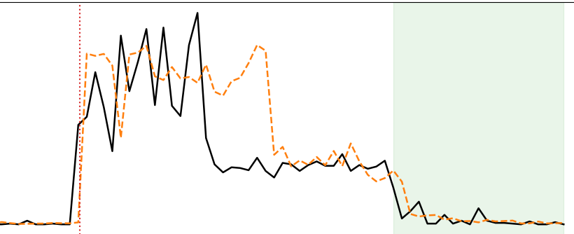

Anto Abousefian
Business Analyst · SQL · Python · Tableau
Hi my name is Anto Abousefian, I received my undergraduate degree in Finance and Business Management. I am currently an MMA student. My skills are speaking 4 languages. I would like a Financial Analyst role or IMIT Business Solutions Analyst/ Procurement Analyst in a Defense setting.

Forecasting Fatalities on the Russia–Ukraine Fronts
Built a Random Forest model on 169,000+ ACLED conflict events to forecast next week's deaths on 11 front-line regions. It beat a naive baseline by 16% but could not anticipate the sudden Kursk incursion (Aug 2024).
Python · scikit-learn · pandas · GeoPandas
View on GitHub →
Are Drones Deadlier than Artillery?
Causal inference study of 107,869 strikes. After controlling for front, month and attacking side, drone/air strikes caused about 55% fewer deaths per strike than artillery, and the result passed all robustness tests.
Python · CausalML · DoWhy · XGBoost
View on GitHub →Project Title
Short description of what you did and the tools you used.